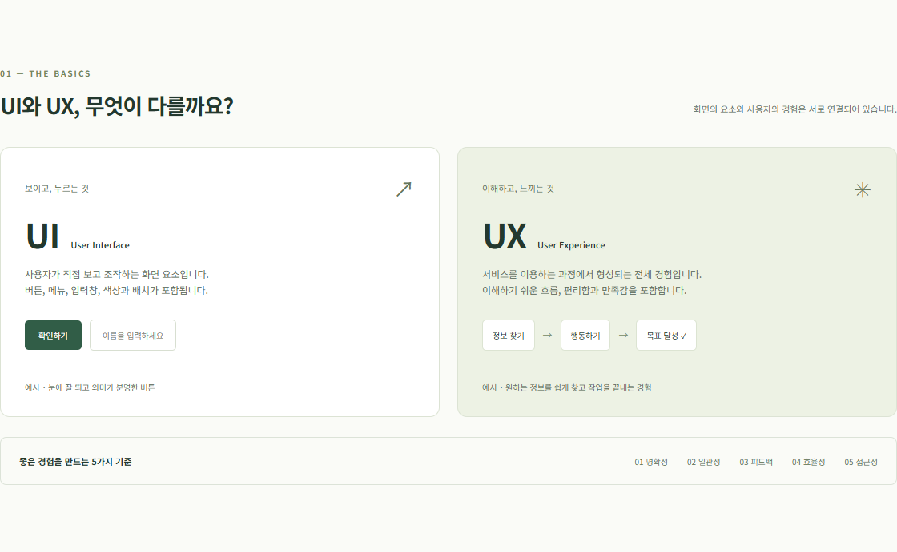

화면에 보이는 요소
UIUser Interface
메뉴, 버튼, 입력창처럼 화면에 보이는 것이 UI입니다.
이 버튼을 누르면 목표 입력으로 이동합니다.
문제 재현 → 상태 복구 → 사용자 테스트 → 수정 후 확인
01 — ASSIGNMENT
작성 중 상태 복구를 추가했습니다.
학습 계획과 학습 기록을 쓰다가 새로고침해도 입력값, 선택값, 진행 단계가 그대로 돌아옵니다.
처음부터 다시 시작하거나 학습 기록 저장에 성공하면 임시로 보관한 내용을 지웁니다.
학습 기록 보기
02 — PRACTICE
개념 비교, 코드 예제, 클릭과 피드백.
화면 요소(UI)와 사용 경험(UX)을 비교합니다.
개념 예제 보기HTML, CSS, JavaScript 탭을 눌러 코드를 확인합니다.
코드 예제 보기버튼을 누르면 숫자와 메시지가 바뀝니다.
인터랙션 예제 보기탭을 눌러 예제를 확인하세요.
메뉴, 버튼, 입력창처럼 화면에 보이는 것이 UI입니다.
이 버튼을 누르면 목표 입력으로 이동합니다.
목표를 정하고 예제를 체험하는 과정 전체가 UX입니다.
다음에 할 일이 바로 보이는지 확인해 보세요.
탭을 눌러 HTML, CSS, JavaScript 코드를 비교합니다.
HTML은 제목, 문단, 링크로 구조를 만듭니다.
<section id="about">
<h2>과제 소개</h2>
<p>HTML 구조와 내부 이동 실습</p>
<a href="#features">실습 내용 보기</a>
</section>버튼을 누를 때마다 숫자와 메시지가 바뀝니다.
아직 누르지 않았습니다.
03 — STEPS
목표 작성 → 예제 확인 → 직접 실행
학습 계획에서 목표를 적고 예제와 시간을 고릅니다.
실습 내용 탭에서 개념과 코드 예제를 확인합니다.
버튼을 눌러 화면이 바뀌는지 확인합니다.
0 / 3단계 완료
학습 계획에서 목표를 5자 이상 적고, 실습할 예제와 시간을 고른 뒤 계획을 확정합니다. 확정하면 고른 예제의 이해도 퀴즈를 풀 수 있습니다.
학습 계획 세우기틀린 문제에 힌트가 나오고, 틀린 문제 다시 풀기를 누르면 그 문제만 다시 풉니다. 세 문제를 모두 맞히면 통과입니다.
저장한 기록은 지금 쓰는 브라우저에만 저장됩니다. 다른 기기나 다른 브라우저에서는 보이지 않고, 사이트 데이터를 지우면 함께 지워집니다. 아직 저장하지 않은 계획과 기록은 이 탭에만 임시로 보관되어 새로고침해도 남고, 처음부터 다시 시작하거나 기록을 저장하면 지워집니다.
저장한 기록에서 자세히 보기를 누르면 상세 창이 열립니다. 창에서 기록 삭제를 누르고 한 번 더 확인하면 지워집니다. 헷갈린 부분이 있는 기록은 복습을 마친 뒤 복습 완료로 표시할 수 있습니다.
Tab으로 옮겨 다니고 Enter나 Space로 누릅니다. 예제 탭과 이 질문 목록은 방향키로도 이동하고, 상세 창과 모바일 메뉴는 Esc로 닫힙니다.
1 / 3 · 목표 입력
3단계로 진행합니다.
맞으면 확정하고, 고치려면 이전으로 돌아가세요.
QUIZ · 3문제
문제마다 답을 하나씩 고르고 채점하세요. 모두 맞히면 통과입니다.
0 / 3문제 답함
05 — RECORD
실습한 예제와 오늘 배운 점을 남깁니다. 기록은 이 브라우저에 저장됩니다.
예제별로 보기
아직 저장한 기록이 없습니다.
실습한 예제와 배운 점을 적어 첫 기록을 남겨 보세요.